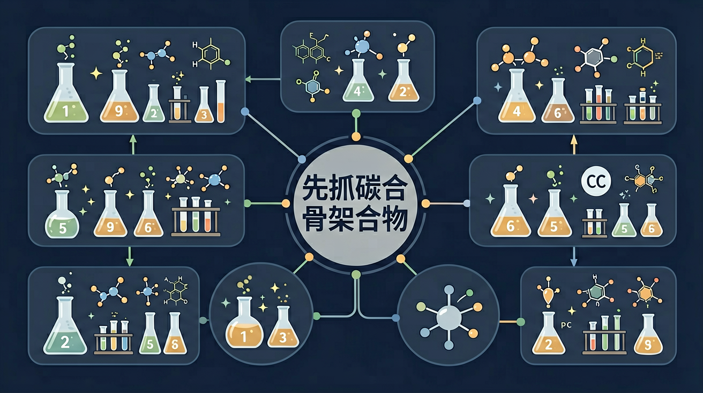

真实情境
有机化合物在生活中的应用
在日常生活中，我们经常接触到各种各样的有机化合物，比如酒精、醋、塑料等。这些物质都是由碳骨架和官能团组成的。了解这些化合物的结构对于理解它们的性质和应用至关重要。
已有经验
学生已经学习了元素周期表，了解了碳元素的基本性质和它在化合物中的重要性。
真正卡点
学生在区分不同类型的官能团时容易混淆，尤其是在复杂的碳骨架结构中。
本课任务
本课的具体任务是让学生能够识别和命名简单的有机化合物，并理解它们的碳骨架和官能团。
为什么有机化学入门不能先背名字，而要先看碳骨架和官能团？

先选一个你关心的问题。后面的例子、提示和 AI 学伴都会围绕这个问题来帮你推进。
选择或输入后，本课会围绕你的问题展开。
在日常生活中，我们经常接触到各种各样的有机化合物，比如酒精、醋、塑料等。这些物质都是由碳骨架和官能团组成的。了解这些化合物的结构对于理解它们的性质和应用至关重要。
学生已经学习了元素周期表，了解了碳元素的基本性质和它在化合物中的重要性。
学生在区分不同类型的官能团时容易混淆，尤其是在复杂的碳骨架结构中。
本课的具体任务是让学生能够识别和命名简单的有机化合物，并理解它们的碳骨架和官能团。
有机物一般指含碳化合物（CO、CO₂、碳酸盐等除外）。碳原子有 4 个价电子，能形成 4 条共价键，可成链、成环、单双三键，导致有机物数目庞大、同分异构普遍。理解碳的成键是学习有机结构的基础。
碳原子通常形成几条共价键？
同系物结构相似、组成相差若干 CH₂，化学性质相似。同分异构体分子式相同但结构不同，性质可不同。书写异构体先定碳骨架，再变换取代位置或官能团位置，做到不重不漏。区分同系物、同分异构体、同位素、同素异形体四个概念。
分子式相同但结构不同的化合物互称？
有机物可用结构式、结构简式、键线式表示。键线式中折点和端点代表碳，氢一般省略。读写有机式先数碳、判断官能团，再补氢满足四价。规范表示有助于命名与反应分析。
键线式中每个折点通常代表？
本课任务：用分子形状理解碳的四面体成键，再动手画 C₄H₁₀ 的两种同分异构体并用键线式表示。
写清自变量、因变量和至少两个保持不变的条件，避免同时改变多个因素后无法归因。
至少记录三组带单位的数据或三个可复查的现象，不用“变大了”“更明显”代替证据。
用本课公式、粒子模型或受力关系解释趋势，并指出结论成立所依赖的模型条件。
换一个参数或真实情境预测结果，再用仿真检验；若不一致，回查变量、单位和边界条件。
有机化合物主要研究碳氢化合物及其衍生物。碳原子可形成链状或环状骨架，常有同分异构现象。学习有机物先抓碳骨架（烷、烯、炔、芳）和官能团，再对应性质与反应类型。
理解有机化合物的基本概念，掌握碳骨架的分类和常见官能团的识别，探究有机物结构与性质的关系。
甲烷燃烧实验：在空气中点燃甲烷气体，可观察到蓝色火焰，生成无色气体二氧化碳和水蒸气（烧杯内壁出现水雾）。
分析有机物结构时，先确定碳骨架类型（链状或环状），再标出官能团位置，最后推导可能发生的反应类型。
学生常混淆烯烃和炔烃的官能团，将碳碳双键（C=C）错误写成碳碳三键（C≡C），导致性质判断错误。
课堂任务：请用“现象/文本/地图/实验数据 → 关键证据 → 学科解释 → 迁移应用”四步，重写一个关于「有机化合物入门：先抓碳骨架和官能团」的新问题。
识别并写出本节核心定义、公式或分类标准。
把本课标准用于一个实验数据或真实生活场景。
设计一个反例，说明常见错误为什么站不住脚。
如果你能解释“为什么有机化学入门不能先背名字，而要先看碳骨架和官能团？”，这节课就真正过关了。
看到结构先数碳、看饱和与否、找官能团。命名按系统规则选主链、编号。同分异构分碳链、位置、官能团异构等。
常见误区：常见误区是只记分子式不看结构，忽略同分异构导致的性质差异。
有机物学习的关键切入点通常是？
记忆锚点：有机入门两把钥匙：碳骨架看“长什么样”，官能团看“会怎么反应”。
易错提醒：常见错误：只看元素组成判断有机物性质。乙醇和二甲醚分子式相同但结构不同，性质不同。
不要只看结论。动手改变变量后，再用一句话解释画面为什么变了。